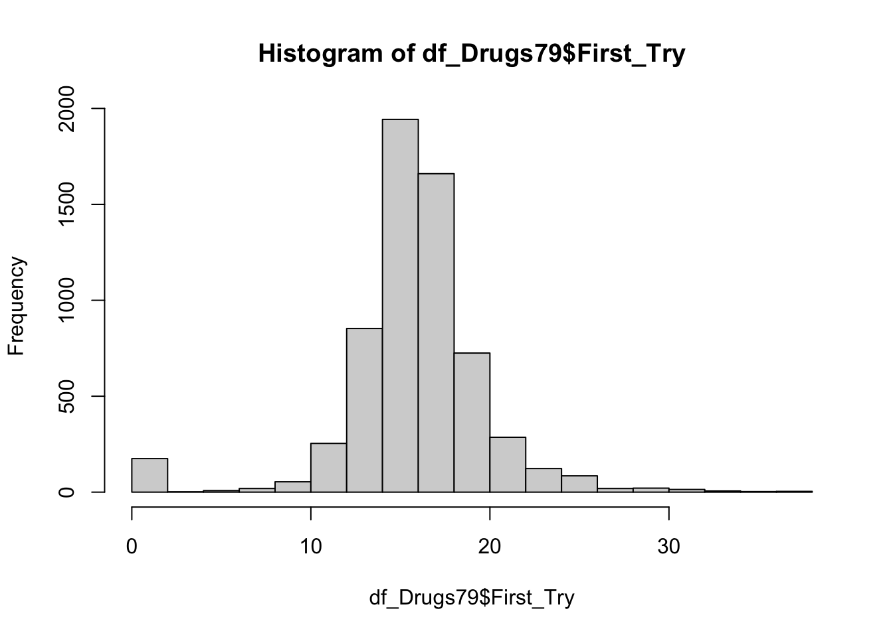
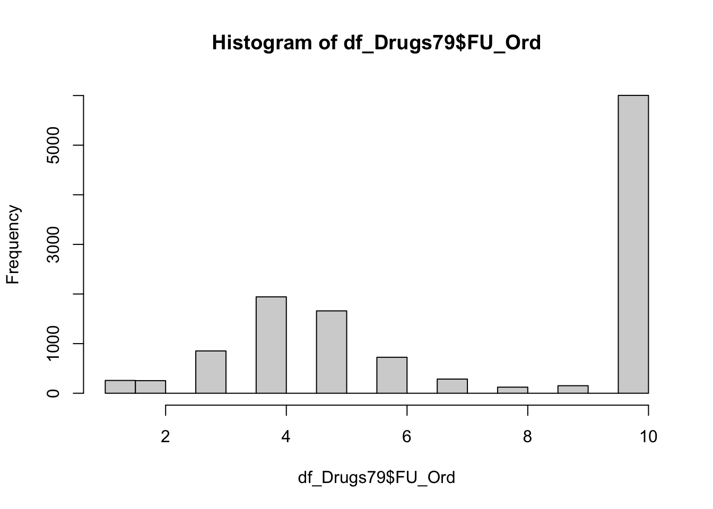
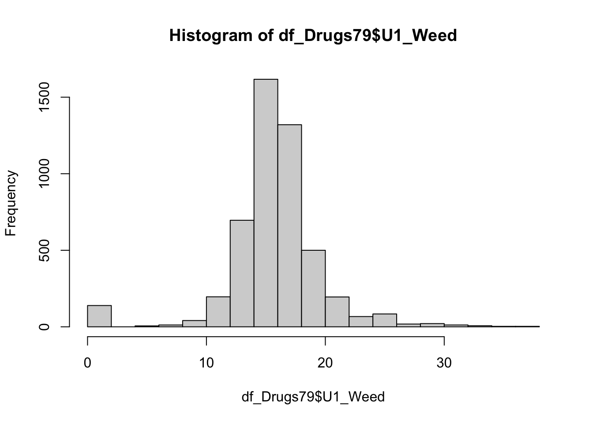
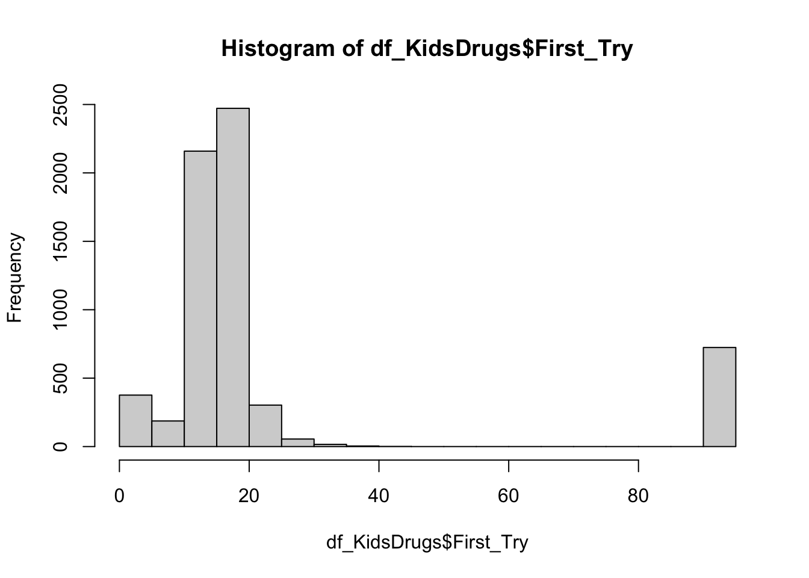
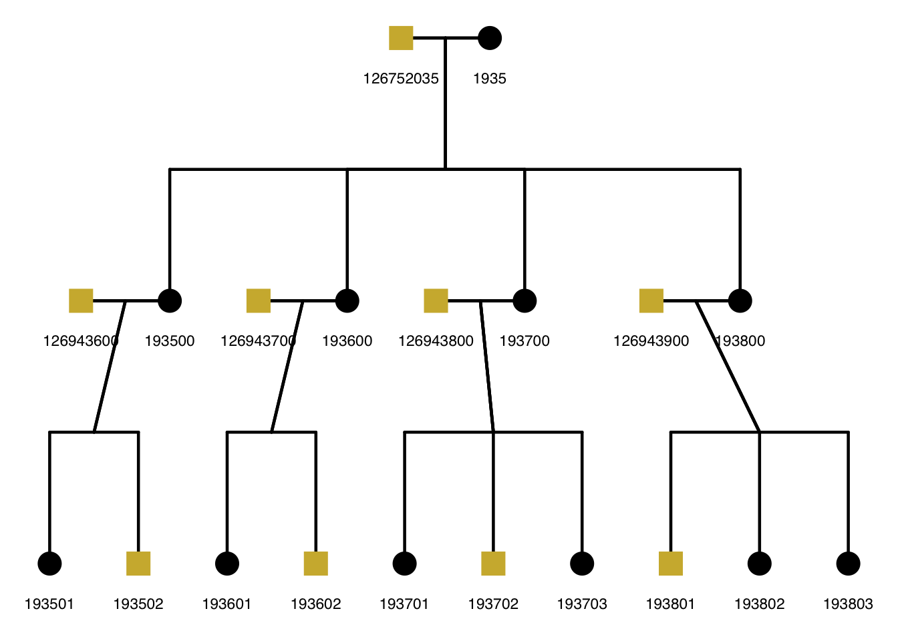
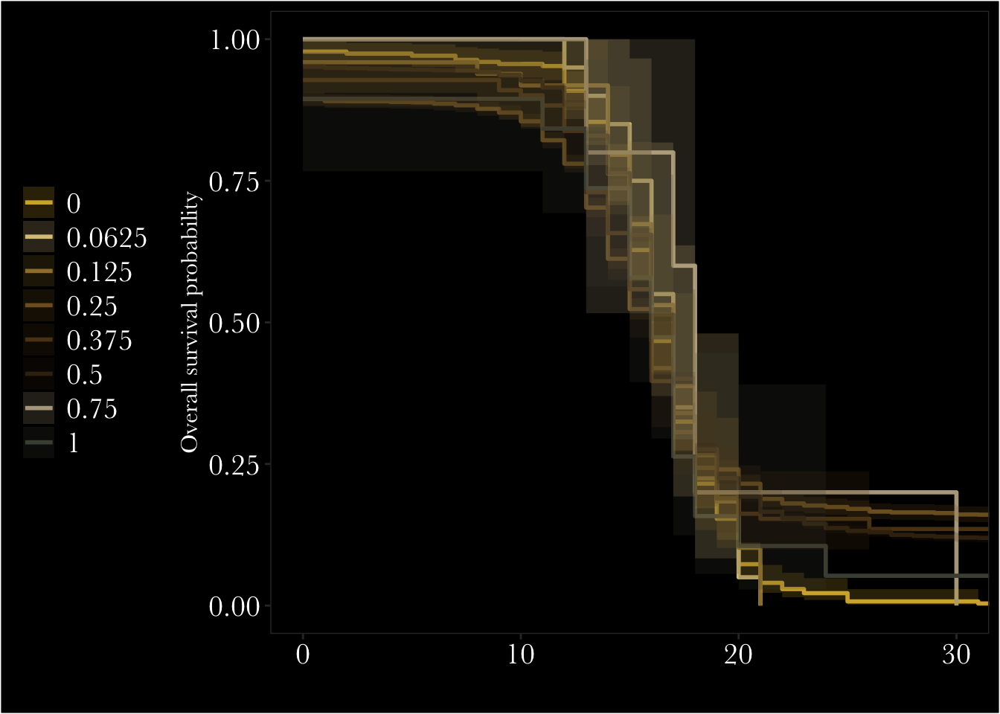
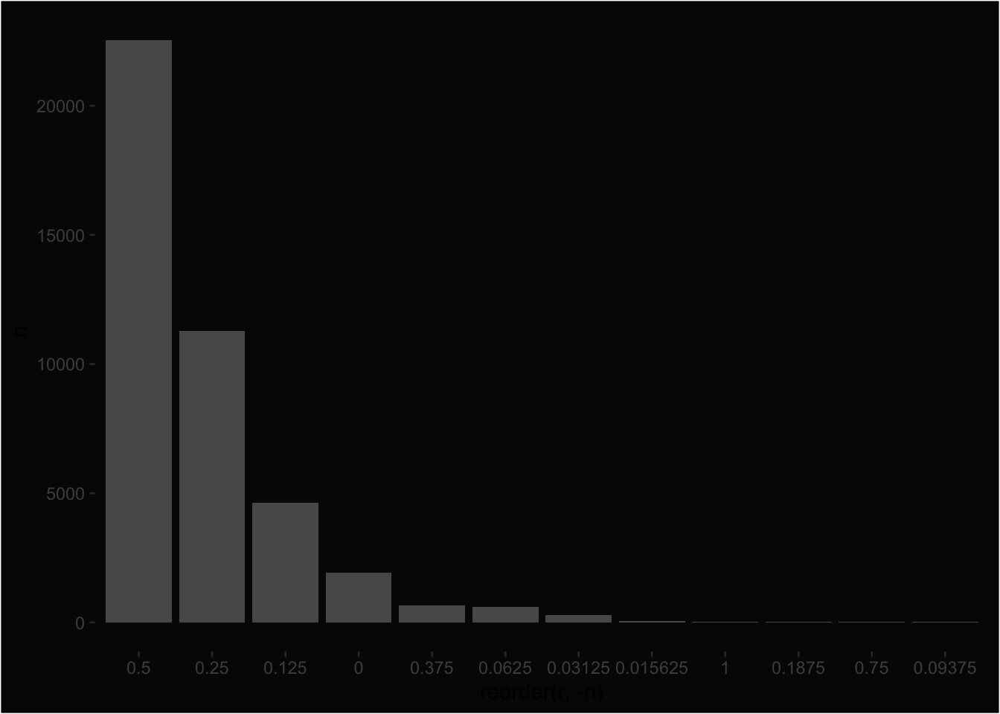

Making FYP Poster Figures
I am going to make a pedigree, relatedness matrix, interactive relatedness matrix, and fancy survival graph, and then try to get the figure to match my poster color theme. I am also going to try out some cool visualizations of the different kinship links available in the NLSY (though in the poster I end up just using a table for a cleaner look)
library(NlsyLinks)
library(ggplot2)
library(BGmisc)
library(ggpedigree)
library(tidyr)
library(dplyr)
library(stringr)
library(forcats)
library(psych)
library(polycor)
library(tidyverse)
library(devtools)
library(remotes)
library(NlsyLinks)
library(parameters)
library(gtsummary)
library(discord)
library(janitor)
library(lm.beta)
library(matrixStats)
library(gt)
library(OpenMx)
library(ACEsimFit)
#stuff for survival analysis
library(knitr)
library(survival)
library(ggplot2)
library(tibble)
library(lubridate)
library(ggsurvfit)
library(gtsummary)
library(tidycmprsk)
library(condSURV)
library(viridis)
library(mets)
# Helper functions
source("~/Documents/Research/Github/risky_gambling/data/miFunctions.R")
#data and cleaning scripts
source("~/Documents/Research/Github/risky_gambling/data/RiskTaking79/RiskTaking79.R")
#summary(df_RiskTaking79)
source("~/Documents/Research/Github/risky_gambling/data/79Demographics/79Demographics.R")
source("~/Documents/Research/Github/risky_gambling/data/GeneralRisk79/GeneralRisk79.R")
#summary(df_GeneralRisk79)
source("~/Documents/Research/Github/risky_gambling/data/KidRiskBehavior/KidRiskBehavior.R")
#summary(df_KidRiskBehavior)
source("~/Documents/Research/Github/risky_gambling/data/KidsDemographics/KidsDemographics.R")
#summary(df_KidsDemographics)
source('~/Documents/Research/Github/risky_gambling/data/CBRandYBR/CBRandYBR.R')
source('~/Documents/Research/Github/risky_gambling/data/sexID/sexID.R')
source('~/Documents/Research/Github/risky_gambling/data/kidsexID/kidsexID.R')
ID_sex <- rbind(parent_sex, kid_sex)
recode_missing_values <- FALSE
source("~/Documents/Research/Github/risky_gambling/data/Drugs79/Drugs79.R")




source("~/Documents/Research/Github/risky_gambling/data/KidDrugs/KidDrugs.R")
source('~/Documents/Research/Github/risky_gambling/data/age/age.R')
source('~/Documents/Research/Github/risky_gambling/merging_harmonizing_selecting.r')
source('~/Documents/Research/Github/risky_gambling/boring_surv.r')## List of 18
## $ n : int 6254
## $ time : num [1:39] 0 1 2 3 4 5 6 7 8 9 ...
## $ n.risk : num [1:39] 6254 6093 6086 6079 6078 ...
## $ n.event : num [1:39] 161 7 7 1 1 4 4 2 17 14 ...
## $ n.censor : num [1:39] 0 0 0 0 0 0 0 0 0 0 ...
## $ surv : num [1:39] 0.974 0.973 0.972 0.972 0.972 ...
## $ std.err : num [1:39] 0.00206 0.0021 0.00215 0.00215 0.00216 ...
## $ cumhaz : num [1:39] 0.0257 0.0269 0.028 0.0282 0.0284 ...
## $ std.chaz : num [1:39] 0.00203 0.00207 0.00212 0.00213 0.00213 ...
## $ type : chr "right"
## $ logse : logi TRUE
## $ conf.int : num 0.95
## $ conf.type: chr "log"
## $ lower : num [1:39] 0.97 0.969 0.968 0.968 0.968 ...
## $ upper : num [1:39] 0.978 0.977 0.976 0.976 0.976 ...
## $ t0 : num 0
## $ na.action: 'omit' Named int [1:6432] 1 2 5 11 12 15 19 23 24 29 ...
## ..- attr(*, "names")= chr [1:6432] "1" "2" "5" "11" ...
## $ call : language survfit(formula = Surv(First_Try, Any_Drug_Use) ~ 1, data = df_Drugs79)
## - attr(*, "class")= chr "survfit"source('~/Documents/Research/Github/risky_gambling/NLSY_family_creation.r')
source('~/Documents/Research/Github/risky_gambling/BigNLSY_creation.r')Part 1: Pedigree of Family 820.
I picked family 820 because it is one of the larger families available in the data.
nlsy_ped <- BigNLSY |>
transmute(
ID = as.integer(ID),
momID = as.integer(momID),
dadID = as.integer(dadID),
sex = sex,
famID = as.integer(famID),
lrs = First_Try) #I think lrs is the phenotype so thats what I'm gonna do
cat("KRSP pedigree:", nrow(nlsy_ped), "individuals,",
n_distinct(nlsy_ped$famID), "grids\n")## KRSP pedigree: 35736 individuals, 5077 gridssummarizeFamilies(nlsy_ped, famID = "famID")$family_summary |> arrange(desc(count))## famID count sex_mean sex_median sex_min sex_max sex_sd lrs_mean lrs_median lrs_min lrs_max lrs_sd
## <int> <int> <num> <num> <num> <num> <num> <num> <num> <num> <num> <num>
## 1: 28 51 0.54901961 1.0 0 1 0.50254256 28.000000 16 15 95 28.4604989
## 2: 48 35 0.45714286 0.0 0 1 0.50543267 13.700000 15 0 19 5.3135048
## 3: 2 33 0.48484848 0.0 0 1 0.50751922 15.368421 14 10 21 3.7890269
## 4: 32 32 0.50000000 0.5 0 1 0.50800051 16.555556 16 0 29 6.2799609
## 5: 4 31 0.41935484 0.0 0 1 0.50161031 15.777778 15 13 21 2.2636658
## ---
## 5073: 4960 3 0.33333333 0.0 0 1 0.57735027 15.000000 15 15 15 NA
## 5074: 4963 3 0.66666667 1.0 0 1 0.57735027 NaN NA NA NA NA
## 5075: 4976 3 0.66666667 1.0 0 1 0.57735027 NaN NA NA NA NA
## 5076: 4982 3 0.66666667 1.0 0 1 0.57735027 13.000000 13 13 13 0.0000000
## 5077: 4987 3 0.66666667 1.0 0 1 0.57735027 16.000000 16 16 16 0.0000000fam_820 <- nlsy_ped %>%
filter(famID == 820)
mat_820 <- ped2add(fam_820, isChild_method = "partialparent", sparse = FALSE)
ggpedigree::ggpedigree(fam_820,
personID = "ID",
config = list(
code_male = 1, # Here, 1 = male, 0 = female
sex_color_include = TRUE,
sex_color_palette = c("black", "#CFB53B")
))
fam_521 <- nlsy_ped %>%
filter(famID == 521)
fam_711 <- nlsy_ped %>%
filter(famID == 711)
df_ped_all <- rbind(fam_820, fam_521, fam_711)
ggpedigree::ggpedigree(df_ped_all,
personID = "ID",
famID = "famID",
config = list(
code_male = 1, # Here, 1 = male, 0 = female
sex_color_include = TRUE,
sex_color_palette = c("black", "#CFB53B")
),
code_male = 1
) +
facet_wrap(~famID, scales = "free") #+
# theme_dark() +
# theme_minimal()
#this is also sick but I can't get the color settings I want
plot_820 <- ggRelatednessMatrix(
mat_820,
interactive = TRUE,
config = list(
# color_palette = c("white", "skyblue", "darkblue"),
scale_midpoint = 0.55,
cluster = TRUE,
title = "Genetic Relatedness",
text_size = 6,
return_widget = TRUE
))## Warning in buildPlotConfig(default_config = default_config, config = config, : The following config values are not
## recognized by getDefaultPlotConfig(): scale_midpoint, cluster, title, text_sizeThis is cool, would like to try to run
fam_820 <- fam_820 %>%
rename(personID = "ID")
plot_820 <- ggPedigree(fam_820,
famID = "famID",
personID = "personID",
config = list(
focal_fill_personID = 126752035,
focal_fill_include = TRUE,
focal_fill_high_color = "gold",
focal_fill_mid_color = "tan",
focal_fill_low_color = "#F9F9F7",
focal_fill_force_zero = TRUE,
focal_fill_na_value = "white",
focal_fill_scale_midpoint = 0.25,
focal_fill_component = "additive",
focal_fill_method = "gradient",
focal_fill_n_breaks = NULL,
focal_fill_legend_title = "Relatedness",
# "additive",
sex_color_include = FALSE,
sex_legend_show = FALSE,
segment_spouse_color = "white", #I actually think I prefer the white lines
segment_sibling_color = "white",
segment_parent_color = "white",
segment_offspring_color = "white")) +
theme(
panel.background = element_rect(fill = "transparent", color = NA),
plot.background = element_rect(fill = "transparent", color = NA),
panel.grid = element_blank(),
legend.text = element_text(color = "white"),
legend.title = element_text(color = "white"))
ggsave('plot820.PNG', plot_820, bg = "transparent")## Saving 7 x 5 in imagePart 2: Relatedness Matrix of Family 820
Trying to change the ggrelatedness matrix color settings. I went in and changed the settings in defaultPlotConfig.R and this made the plot into the wake forest theme. And then it was so ugly I changed it back. So in this step, I am going to change the defaults, run it, and then I am going to copy the script and revert it to the original defaults that look much better.
- Wake theme, no transparent background though, so you can see it.
source("~/Documents/Research/Github/risky_gambling/buildPLotConfig.R")
source("~/Documents/Research/Github/risky_gambling/ggRelatednessMatrix.R")
source("~/Documents/Research/Github/risky_gambling/defaultPlotConfig_WF.R")
#relate_820 <-
ggRelatednessMatrix(mat_820) +
# config = default_config)
# apply_default_theme == FALSE) +
theme(text = element_text(family = "Baskerville", color = "white", size = 20),
panel.background = element_rect(fill = "black", color = NA),
plot.background = element_rect(fill = "black", color = NA),
panel.grid = element_blank(),
legend.text = element_text(color = "white"),
legend.title = element_text(color = "white"),
# axis.title = element_blank(),
# axis.text.x = element_blank(),
# axis.text.y = element_blank(),
axis.text.x = element_text(colour = "white", size = 17),
axis.text.y = element_text(colour = "white", size =17))
#ggsave('relate820.PNG', relate_820, bg = 'transparent', dpi = 300)In the final version on the poster, the ID labels were too much, so I make them blank instead.
source("~/Documents/Research/Github/risky_gambling/defaultPlotConfig.R")
#relate_820 <-
ggRelatednessMatrix(mat_820) +
# config = default_config)
# apply_default_theme == FALSE) +
theme(text = element_text(family = "Baskerville", color = "white", size = 20),
panel.background = element_rect(fill = "transparent", color = NA),
plot.background = element_rect(fill = "transparent", color = NA),
panel.grid = element_blank(),
legend.text = element_text(color = "white"),
legend.title = element_text(color = "white"),
plot.title = element_text(hjust = 0.5),
# axis.title = element_blank(),
# axis.text.x = element_blank(),
# axis.text.y = element_blank(),
axis.text.x = element_text(colour = "white", size = 17),
axis.text.y = element_text(colour = "white", size =17))
#ggsave('relate820.PNG', relate_820, bg = 'transparent', dpi = 300)Part 3: Survival graph
#Now I can run a survival analysis comparing groups
#median age for the 79ers and kids was 16 which is cool
#first I need to prep some new df format
df_KidsPairs <- df_linkBigKids %>%
select(c("First_Try_S1","First_Try_S2","Any_Drug_Use_S1","Any_Drug_Use_S2","FU_Ord_S1","FU_Ord_S2",
"SubjectTag_S1","SubjectTag_S2","ExtendedID","R","Sex_S1","Sex_S2")) %>%
mutate(Group = 1)
df_79pairs <- df_linkBigBoy79 %>%
select(c("First_Try_S1","First_Try_S2","Any_Drug_Use_S1","Any_Drug_Use_S2","FU_Ord_S1","FU_Ord_S2",
"SubjectTag_S1","SubjectTag_S2","ExtendedID","R","Sex_S1","Sex_S2")) %>%
mutate(Group =2)
df_linkDrugsSkinny <- rbind(df_KidsPairs, df_79pairs)
#now I can run the surivval analysis
old_gold_pallete <- c("#D4AF37", "#D9C589", "#9E7E38", "#7D5F28",
"#5C4018", "#3B2A10", "#B5A68C", "#4A4E41")survdiff(Surv(First_Try_S1, Any_Drug_Use_S1) ~ R, data = df_linkDrugsSkinny)## Call:
## survdiff(formula = Surv(First_Try_S1, Any_Drug_Use_S1) ~ R, data = df_linkDrugsSkinny)
##
## n=9616, 6800 observations deleted due to missingness.
##
## N Observed Expected (O-E)^2/E (O-E)^2/V
## R=0 274 274 220.90 12.76582 15.47336
## R=0.0625 20 20 17.52 0.35137 0.41680
## R=0.125 49 49 42.16 1.10799 1.32050
## R=0.25 2724 2724 2634.52 3.03903 5.79528
## R=0.375 111 111 103.02 0.61872 0.85560
## R=0.5 6414 6414 6576.97 4.03817 17.41316
## R=0.75 5 5 5.37 0.02544 0.03037
## R=1 19 19 15.54 0.76911 0.96564
##
## Chisq= 28.3 on 7 degrees of freedom, p= 2e-04survfit(Surv(First_Try_S1, Any_Drug_Use_S1) ~ R, data = df_linkDrugsSkinny)## Call: survfit(formula = Surv(First_Try_S1, Any_Drug_Use_S1) ~ R, data = df_linkDrugsSkinny)
##
## 6800 observations deleted due to missingness
## n events median 0.95LCL 0.95UCL
## R=0 274 274 16 16 17
## R=0.0625 20 20 17 16 18
## R=0.125 49 49 17 16 18
## R=0.25 2724 2724 16 16 16
## R=0.375 111 111 16 15 16
## R=0.5 6414 6414 17 17 17
## R=0.75 5 5 18 17 NA
## R=1 19 19 16 15 18survfit2(Surv(First_Try_S1, Any_Drug_Use_S1) ~ R, data = df_linkDrugsSkinny) |>
ggsurvfit(palette = old_gold_pallete, size =1) +
labs(
x = "Years",
y = "Overall survival probability") +
add_confidence_interval() +
# add_risktable() +
coord_cartesian(xlim = c(0, 30)) +
theme(text = element_text(family = "Baskerville", color = "white", text.size = 15),
panel.background = element_rect(fill = "black"),
plot.background = element_rect(fill = "black"),
panel.grid = element_blank(),
legend.text = element_text(color = "white", size =15),
legend.title = element_text(color = "white", size =15),
axis.title.x = element_text(colour = "black", size =15),
axis.text.x = element_text(colour = "white", size =15),
axis.text.y = element_text(colour = "white", size =15),
legend.background = element_rect(fill = "black"),
legend.position = "left") +
scale_fill_manual(values = old_gold_pallete) +
scale_color_manual(values = old_gold_pallete)## Warning: Using `size` aesthetic for lines was deprecated in ggplot2 3.4.0.
## ℹ Please use `linewidth` instead.
## ℹ The deprecated feature was likely used in the ggsurvfit package.
## Please report the issue at <https://github.com/pharmaverse/ggsurvfit/issues>.
## This warning is displayed once per session.
## Call `lifecycle::last_lifecycle_warnings()` to see where this warning was generated.## Warning in ggplot2::geom_step(ggplot2::aes(x = .data$time, y = .data$estimate, : Ignoring unknown parameters: `palette`## Warning in element_text(family = "Baskerville", color = "white", text.size = 15): `...` must be empty.
## ✖ Problematic argument:
## • text.size = 15
#ggsave('kapcurves.PNG',plot, dpi = 300)
coxph(Surv(First_Try, Any_Drug_Use) ~ Group, data = df_DrugsSkinny) |>
tbl_regression(exp = TRUE) | Characteristic | HR | 95% CI | p-value |
|---|---|---|---|
| Group | 1.23 | 1.18, 1.27 | <0.001 |
| Abbreviations: CI = Confidence Interval, HR = Hazard Ratio | |||
Part 4: Kinship links visualization
First, here are the different relatedness values and their frequency
r <- c(0, 0.015625, 0.03125, 0.0625, 0.09375, 0.125, 0.1875, 0.25, 0.375, 0.5, 0.75, 1 )
n <- c(1925, 55, 291, 604, 12, 4629, 24, 11294, 647, 22545, 24, 38)
relatedness <- data.frame(r,n)
relatedness <- relatedness %>%
mutate(r = as.factor(r))Here is the first crack at it:
ggplot(relatedness, aes(x=reorder(r, -n), y=n)) +
geom_col(scale_fill_manual = c("gold")) +
theme(
panel.background = element_rect(fill = "#060606"),
plot.background = element_rect(fill = "#060606"),
panel.grid = element_blank(),
legend.text = element_text(color = "white"),
legend.title = element_text(color = "white"))## Warning in geom_col(scale_fill_manual = c("gold")): Ignoring unknown parameters: `scale_fill_manual`
This makes it gold, transparent, and saves it directly to my computer so I can upload it into my poster:
plot <- ggplot(relatedness, aes(x = reorder(r, -n), y = n)) +
geom_col(fill = "#9E7E38") +
# Add the text labels on top of the bars
geom_text(
aes(label = n),
vjust = -0.5, # Adjust vertical position (negative moves it up)
color = "white", # Match your dark theme
size = 7,
# angle = 45,
# Adjust font size as needed
family = "Baskerville") +
#theme_minimal(base_family = "cormorant") +
theme(text = element_text(family = "Baskerville", color = "white"),
panel.background = element_rect(fill = "transparent", color = NA),
plot.background = element_rect(fill = "transparent", color = NA),
panel.grid = element_blank(),
# Hide the y-axis elements
axis.text.y = element_blank(),
axis.ticks.y = element_blank(),
axis.title.y = element_blank(),
# Style the x-axis for visibility
axis.text.x = element_text(color = "white", angle = 45, # Slants the text (45 or 90 are most common)
hjust = 1, size = 14),
axis.title.x = element_blank()
) +
# Expand the y-axis slightly so the top label doesn't get cut off
expand_limits(y = max(relatedness$n) * 1.1)
ggsave('plot.PNG', plot, bg = 'transparent' )## Saving 7 x 5 in imageplot